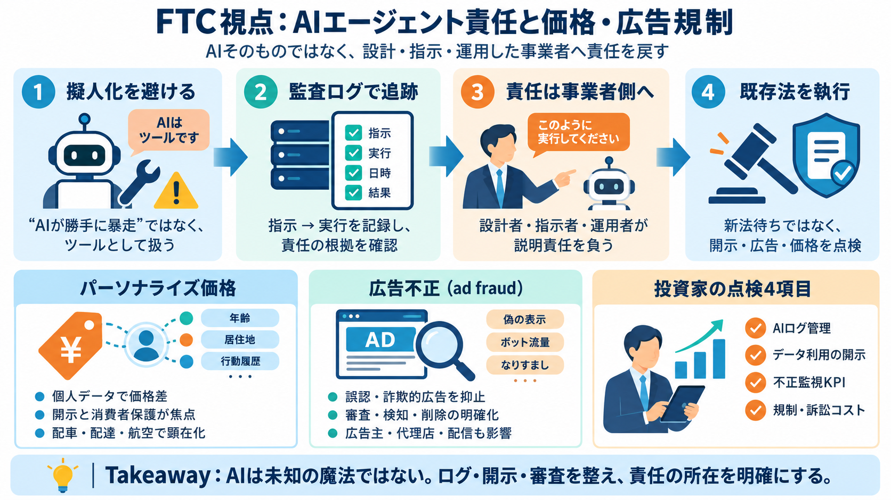

AI-Driven Personalized Pricing: The FTC's New ...
The FTC’s proposed August 2026 enforcement policy makes AI-driven personalized pricing a key enforcement focus, warning …

責任は“AIそのもの”ではなく、命令・設計・運用をした側へ。
個人データに基づく価格差別と、詐欺的・誤認を招く広告を重視。
「ツールが勝手にやった」で逃げがち。
賠償・罰金・契約終了リスクが上がる。
コンプライアンスの見積りが難しくなる。
“AIが勝手に暴走した”という言い方で責任が曖昧になる。
監査ログで「命令どおり実行」なら、命令者・設計者が評価対象。
ログで追える範囲は、実行は命令に紐づく。
誤作動や実害は、設計・運用・指示の側が評価されやすい。
位置情報・閲覧履歴などから差別化し、負担に影響しうる。
情報取得→市場調査→価格提示の流れで、開示義務が争点になり得る。
枠組みの更新待ちより、既存権限で対応。
パーソナライズ価格は開示不備が争点になり得る。
法務・セキュリティ・広報のリスク見積りが必要。
需要や状況に応じて価格が動きやすく、最適化が入りやすい。
規制が進むと価格最適化手法の再設計が必要になり得る。
審査・検知・削除・責任分担が曖昧だと是正が進みにくい。
広告主、制作/代理店、計測・配信システムも実務コストに波及。
命令の追跡可能性（auditability）とガバナンス。
パーソナライズ価格の根拠と消費者への説明。
検知/削除の仕組みと運用KPI。
罰金・提訴・評判毀損の見積り。
指示・設計・運用へ責任を戻す。
パーソナライズ価格の開示と実務。
アド・フロードの抑止を強める。
The FTC’s proposed August 2026 enforcement policy makes AI-driven personalized pricing a key enforcement focus, warning …
On August 19, 2026, the FTC published for public comment a proposed Enforcement Policy Statement regarding the use of co…
1 Federal Trade Commission’s Proposed Enforcement Policy Statement Regarding Personalized Pricing August 19, 2026 I. Sum…
On August 19, 2026, the Federal Trade Commission (FTC) announced that it is seeking public comment on a proposed enforce…
“When consumers see a listed price, they expect it to be same price that everyone else sees, not the retailer’s estimate…